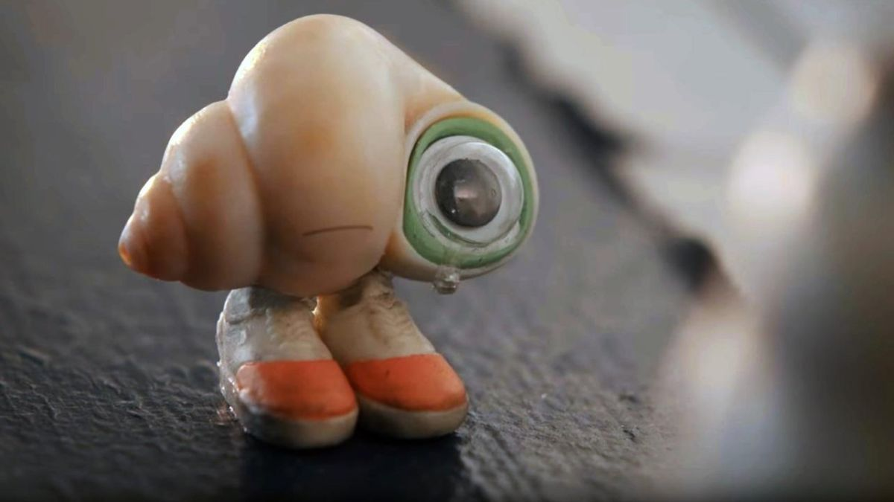

Deze pagina gaat over de film: Marcel the Shell with Shoes on. Deze film, uitgebracht in 2021 was in verschillende bioscopen te zien. Zo ook bij Lumiére in Maastricht.
Er moeten zo veel anderen zijn zoals ik, mijmert Marcel (Jenny Slate) ergens in het midden van de geanimeerde mockumentary Marcel the Shell with Shoes On. Marcel, een antropomorf schelpje, heeft het gros van zijn familieleden verloren in de nacht dat de eigenaren van het huis waar hij woont, uit elkaar gingen. Alleen zijn oude oma (Isabella Rossellini) woont nog bij hem. Het huis is inmiddels een Airbnb. De koelkast is nu altijd leeg. De positief ingestelde Marcel probeert zich zonder zijn gemeenschap te redden. Dan komt Dean (Dean Fleischer), die net gescheiden is van zijn vrouw, in de Airbnb overnachten. Hij besluit een documentaire te maken over Marcel. En hoewel Dean stellig zegt dat hij niet voor de camera wil verschijnen, is de film ook een weerspiegeling van zijn eigen verlies. Slate en Fleisher baseerden de film op hun gelijknamige YouTubefilmpjes, die ze maakten terwijl ze een relatie hadden. Toen ze van hun korte films een speelfilm maakten, waren ze gescheiden. Marcel the Shell with Shoes On is dus een film over rouw en verlies die tot stand is gekomen door de samenwerking van twee exen. Dit gegeven is een van de zelfreflexieve elementen in de film, die met verwijzingen naar YouTube ook het maakproces van de film in ogenschouw neemt.
Chiodo Bros. Production (bekend van de cultklassieker Killer Klowns from Outer Space uit 1988 ) leidde de animatie, met Edward Chiodo als animatieproducent en Kirsten Lepore als animatieregisseur. Stephen Chiodo was de toezichthoudende animatieregisseur van de film. Bianca Cline leidde de live-action cinematografie, terwijl Eric Adkins ( Mars Attacks!, The PJs ) de stop-motion cinematografie leidde.
